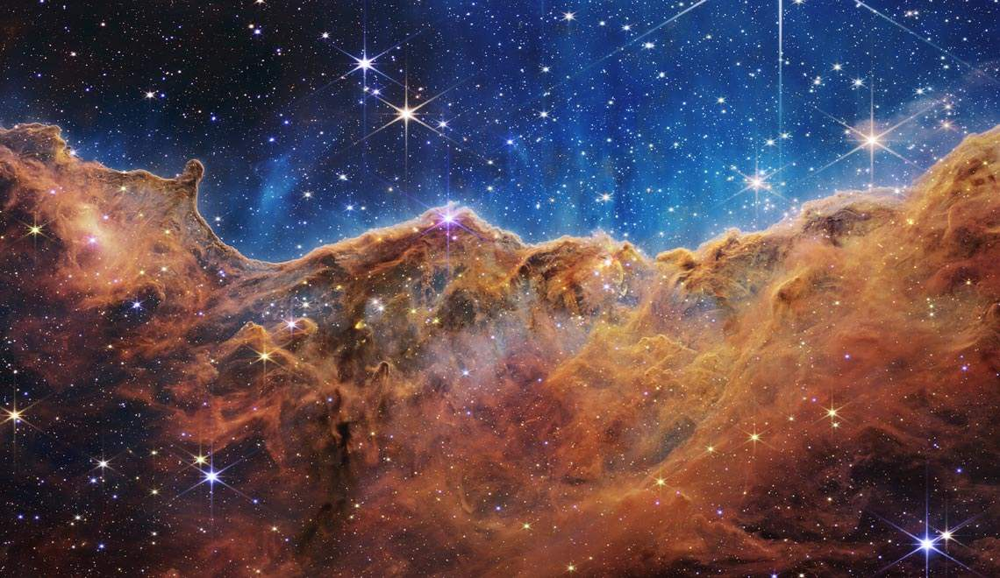
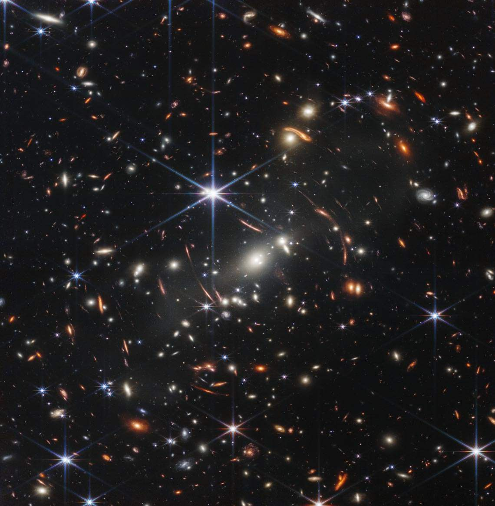
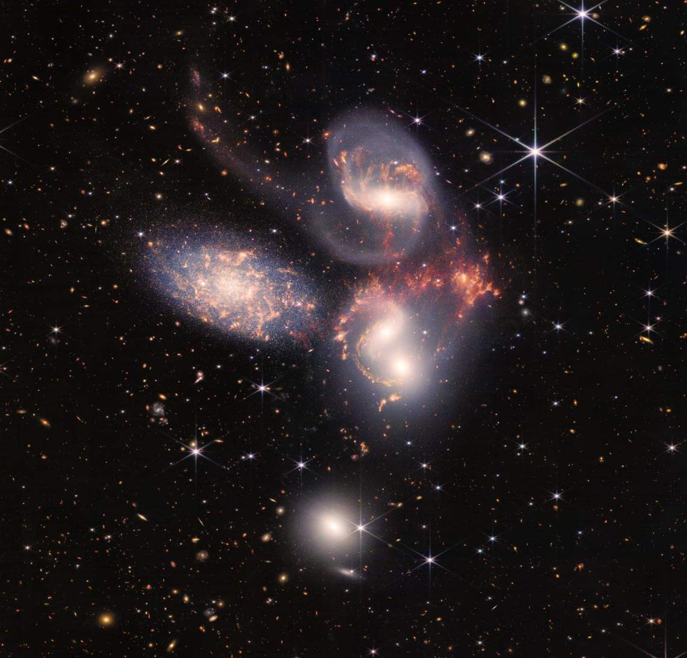

Fotos
Missão
Características
Home
AS PRIMEIRAS IMAGENS FEITAS PELO JAMES WEBB
Nebulosa Carina

Região NGC 3324, na Nebulosa de Carina , que é um berçario de estrelas
Nebulosa planetária
Anéis de poeira e gás em torno de uma estrela no final de sua vida, a nebulosa planetária NGC 3132
Aglomerado de Galáxias

Aglomerado de galáxias SMACS 0723, a imagem em infravermelho mais profunda e nítida do universo distante
Quinteto de Stephan

Grupo de galáxias conhecido como Quinteto de Stephan